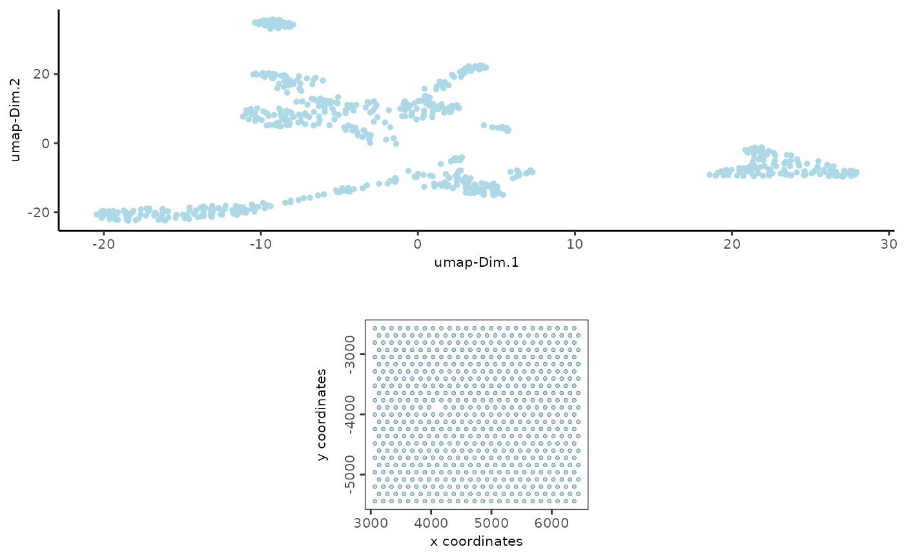

Visualize cells according to spatial AND dimension reduction coordinates 2D
Usage
spatDimPlot2D(
gobject,
spat_unit = NULL,
feat_type = NULL,
show_image = FALSE,
gimage = NULL,
image_name = NULL,
largeImage_name = NULL,
spat_loc_name = NULL,
plot_alignment = c("vertical", "horizontal"),
dim_reduction_to_use = "umap",
dim_reduction_name = NULL,
dim1_to_use = 1,
dim2_to_use = 2,
sdimx = "sdimx",
sdimy = "sdimy",
spat_enr_names = NULL,
cell_color = NULL,
color_as_factor = TRUE,
cell_color_code = NULL,
cell_color_gradient = NULL,
gradient_midpoint = NULL,
gradient_style = c("divergent", "sequential"),
gradient_limits = NULL,
select_cell_groups = NULL,
select_cells = NULL,
dim_point_shape = c("border", "no_border"),
dim_point_size = 1,
dim_point_alpha = 1,
dim_point_border_col = "black",
dim_point_border_stroke = 0.1,
spat_point_shape = c("border", "no_border", "voronoi"),
spat_point_size = 1,
spat_point_alpha = 1,
spat_point_border_col = "black",
spat_point_border_stroke = 0.1,
dim_show_cluster_center = FALSE,
dim_show_center_label = TRUE,
dim_center_point_size = 4,
dim_center_point_border_col = "black",
dim_center_point_border_stroke = 0.1,
dim_label_size = 4,
dim_label_fontface = "bold",
spat_show_cluster_center = FALSE,
spat_show_center_label = FALSE,
spat_center_point_size = 4,
spat_center_point_border_col = "blue",
spat_center_point_border_stroke = 0.1,
spat_label_size = 4,
spat_label_fontface = "bold",
show_NN_network = FALSE,
nn_network_to_use = "sNN",
network_name = "sNN.pca",
nn_network_alpha = 0.05,
show_spatial_network = FALSE,
spat_network_name = "Delaunay_network",
spat_network_color = "blue",
spat_network_alpha = 0.5,
show_spatial_grid = FALSE,
spat_grid_name = "spatial_grid",
spat_grid_color = "blue",
show_other_cells = TRUE,
other_cell_color = "lightgrey",
dim_other_point_size = 1,
spat_other_point_size = 1,
spat_other_cells_alpha = 0.5,
dim_show_legend = FALSE,
spat_show_legend = FALSE,
legend_text = 10,
legend_symbol_size = 2,
dim_background_color = "white",
spat_background_color = "white",
vor_border_color = "white",
vor_max_radius = 200,
vor_alpha = 1,
axis_text = 8,
axis_title = 8,
show_plot = NULL,
return_plot = NULL,
save_plot = NULL,
save_param = list(),
default_save_name = "spatDimPlot2D"
)
spatDimPlot(gobject, ...)Arguments
- gobject
giotto object
- spat_unit
spatial unit (e.g. "cell")
- feat_type
feature type (e.g. "rna", "dna", "protein")
- show_image
show a tissue background image
- gimage
a giotto image
- image_name
name of a giotto image or multiple images with group_by
- largeImage_name
deprecated
- spat_loc_name
name of spatial locations
- plot_alignment
direction to align plot
- dim_reduction_to_use
character. dimension reduction to use
- dim_reduction_name
character. dimension reduction name
- dim1_to_use
numeric. dimension to use on x-axis
- dim2_to_use
numeric. dimension to use on y-axis
- sdimx
= spatial dimension to use on x-axis
- sdimy
= spatial dimension to use on y-axis
- spat_enr_names
character. names of spatial enrichment results to include
- cell_color
character. what to color cells by (e.g. metadata col or spatial enrichment col)
- color_as_factor
logical. convert color column to factor. Discrete colors are used when this is TRUE. continuous colors when FALSE.
- cell_color_code
character. discrete colors to use. palette to use or named vector of colors
- cell_color_gradient
character. continuous colors to use. palette to use or vector of colors to use (minimum of 2).
- gradient_midpoint
numeric. midpoint for color gradient
- gradient_style
either 'divergent' (midpoint is used in color scaling) or 'sequential' (scaled based on data range)
- gradient_limits
numeric vector with lower and upper limits
- select_cell_groups
select subset of cells/clusters based on cell_color parameter
- select_cells
select subset of cells based on cell IDs
- dim_point_shape
point with border or not (border or no_border)
- dim_point_size
size of points in dim. reduction space
- dim_point_alpha
transparancy of point in dim. reduction space
- dim_point_border_col
border color of points in dim. reduction space
- dim_point_border_stroke
border stroke of points in dim. reduction space
- spat_point_shape
shape of points (border, no_border or voronoi)
- spat_point_size
size of spatial points
- spat_point_alpha
transparancy of spatial points
- spat_point_border_col
border color of spatial points
- spat_point_border_stroke
border stroke of spatial points
- dim_show_cluster_center
show the center of each cluster
- dim_show_center_label
provide a label for each cluster
- dim_center_point_size
size of the center point
- dim_center_point_border_col
border color of center point
- dim_center_point_border_stroke
stroke size of center point
- dim_label_size
size of the center label
- dim_label_fontface
font of the center label
- spat_show_cluster_center
show the center of each cluster
- spat_show_center_label
provide a label for each cluster
- spat_center_point_size
size of the center point
- spat_center_point_border_col
border color of spatial center points
- spat_center_point_border_stroke
border strike size of spatial center points
- spat_label_size
size of the center label
- spat_label_fontface
font of the center label
- show_NN_network
logical. Show underlying NN network
- nn_network_to_use
character. type of NN network to use (kNN vs sNN)
- network_name
character. name of NN network to use, if show_NN_network = TRUE
- nn_network_alpha
column to use for alpha of the edges
- show_spatial_network
show spatial network
- spat_network_name
name of spatial network to use
- spat_network_color
color of spatial network
- spat_network_alpha
alpha of spatial network
- show_spatial_grid
show spatial grid
- spat_grid_name
name of spatial grid to use
- spat_grid_color
color of spatial grid
- show_other_cells
display not selected cells
- other_cell_color
color of not selected cells
- dim_other_point_size
size of not selected dim cells
- spat_other_point_size
size of not selected spat cells
- spat_other_cells_alpha
alpha of not selected spat cells
- dim_show_legend
show legend of dimension reduction plot
- spat_show_legend
show legend of spatial plot
- legend_text
size of legend text
- legend_symbol_size
size of legend symbols
- dim_background_color
background color of points in dim. reduction space
- spat_background_color
background color of spatial points
- vor_border_color
border color for voronoi plot
- vor_max_radius
maximum radius for voronoi 'cells'
- vor_alpha
transparency of voronoi 'cells'
- axis_text
size of axis text
- axis_title
size of axis title
- show_plot
logical. show plot
- return_plot
logical. return ggplot object
- save_plot
logical. save the plot
- save_param
list of saving parameters, see
showSaveParameters- default_save_name
default save name for saving, don't change, change save_name in save_param
- ...
spatDimPlot(...) passes to spatDimPlot2D()
See also
Other spatial and dimension reduction visualizations:
spatDimPlot3D()
Examples
g <- GiottoData::loadGiottoMini("visium", verbose = FALSE)
spatDimPlot2D(g)

g <- GiottoData::loadGiottoMini("visium", verbose = FALSE)
spatDimPlot(g)